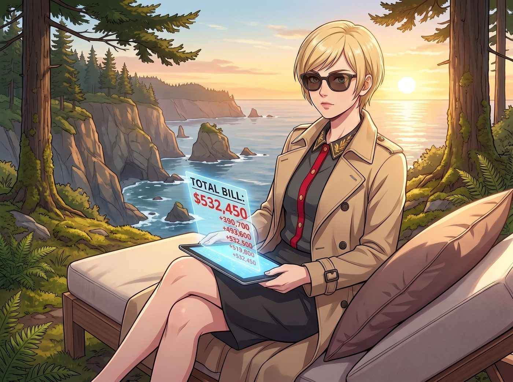
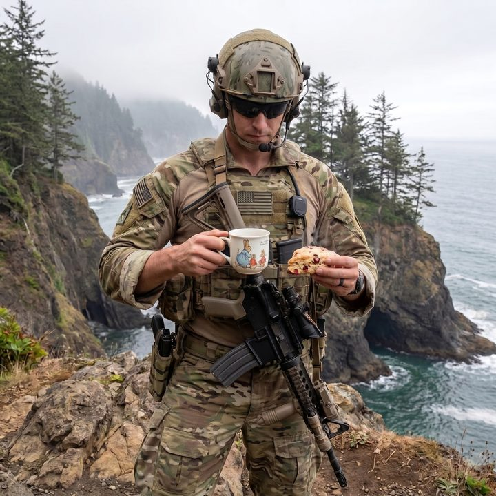

高利貸包租婆與合規性太上皇


每個月的第三個星期三，奧林匹亞半島懸崖邊的寧靜，總會被一隊沒有車牌的黑色雪佛蘭防彈越野車無情打破。
當這群全副武裝、戴著戰術墨鏡的聯邦特工，護送著幾位髮際線嚴重後退、穿著白袍的DARPA頂級核物理學家走下車時，二號車廂的日常就被迫進入了另一種荒謬的節奏。
一、計費營地與戰術下午茶
Max 坐在車廂外空地上的一張折疊露營椅上，生無可戀地拉了拉身上的法蘭絨襯衫。她舉起拍立得，對準了不遠處一個身高一米九、胸前掛著卡賓槍的三角洲部隊特種兵，按下了快門。
隨著閃光燈亮起，那位原本殺氣騰騰的特種兵不僅沒有拔槍，反而有些侷促地低下了頭——因為他的左手正端著一個印有彼得兔圖案的陶瓷茶杯，右手則拿著一塊 Kate 剛烤好的、還冒著熱氣的蔓越莓司康。
「長官，請不要拘束，多吃點。」Kate 繫著碎花小圍裙，提著一籃子糕點穿梭在這些荷槍實彈的警衛之間，笑容聖潔得宛如戰地天使，「你們大老遠趕過來，一定很辛苦吧？這款司康我少放了糖，對你們的心血管比較好哦。」
幾個特種兵面面相覷，最後默默地咬了一口司康，眼神裡居然流露出一絲被治癒的感動。
「我還是覺得這一切太魔幻了。」Max 看著手裡吐出來的底片，對著旁邊正在給重型扳手上油的 Chloe 抱怨，「我們為什麼要像被趕出家門的難民一樣坐在這裡吹冷風？這明明是我們的車廂！」
「糾正一下，Maxine。我們不是被趕出來的，我們這是在騰出高淨值計費空間。」Victoria 穿著一襲風衣，戴著墨鏡，優雅地坐在一把昂貴的戶外躺椅上。她手裡拿著一部平板，螢幕上是一個正在以每秒鐘幾百美金速度瘋狂跳動的計費器。
「那群書呆子在沙漠裡花了幾十億美金建的升級設施，上週又因為電漿體不穩定而引發了事故。」Victoria 輕蔑地攪拌著手裡的熱咖啡，「而我們車廂裡這台被 Chloe 用暴力改裝過、又被 Lily 用合規演算法鎖死了輸出閾值的原型機，卻穩定得像個微波爐。他們走投無路，只能跑來蹭我們的數據模型。作為場地與技術提供方，我每小時向國防部收取二十五萬美金的基礎設施租賃與顧問費。這點冷風，吹得非常超值。」
二、車廂內的學術霸凌
與此同時，二號車廂內部正在上演一場慘無人道的行政與學術雙重霸凌。
Lily 穿著粉色小熊睡衣，端坐在自己的工作台前，手裡拿著一杯熱牛奶。她用一種看著實習生般的憐憫眼神，看著眼前這位擁有三個博士學位、曾被評為年度人物的DARPA首席科學家 Dr. Thorne。
Dr. Thorne 滿頭大汗地站在 Lily 面前，手裡緊緊攥著一個隨身碟，語氣近乎哀求：「Lily 小姐，請妳通融一下。我們只需要導出昨天下午兩點到四點的磁約束線圈峰值數據。我們的模型卡在一個死胡同裡了，沒有這些數據，五角大廈明天就會砍掉我們三成的預算！」
「Dr. Thorne，這不是通融的問題，這是聯邦數據合規與技術隔離的底線原則。」Lily 溫柔地推了推反光的圓框眼鏡，打開了一份長達六百頁的電子合約：「根據貴署上個月與我們簽署的軍民融合非對稱技術授權協議，你們只有唯讀權限，且任何數據導出都必須提前四十八小時提交環境衝擊與技術外洩風險評估報告。您現在是在要求我違反國安局的審計流程嗎？」
「可是……這台反應爐的底層專利原本就是我們的！」旁邊一位年輕的工程師忍不住抗議。
「錯了。」這時，一直蹲在反應爐旁邊檢查管線的 Chloe 站了起來，手裡提著一把巨大的沾滿機油的扳手。她走過去，用扳手敲了敲那位年輕工程師的頭盔：「這玩意兒的專利是你們的，但那根用廢棄凱迪拉克排氣管改裝的冷卻分流器是我的！你們那套嬌貴的代碼根本壓不住電漿，是老娘用重金屬搖滾的頻率物理共振，把它給穩下來的！沒有我的排氣管，你們的專利現在就是一堆放射性廢鐵！」
Lily 點點頭，乖巧地補充：「Price 學姐的凱迪拉克排氣管，已經在上週成功申請了極端環境下的非傳統熱交換系統專利，並且被我打包注入了一家位於開曼群島的殼公司。所以，如果貴署想未經授權使用這部分數據，將面臨跨國知識產權訴訟。」
兩位DARPA的頂級科學家看著這個提著扳手的街頭太妹，再看看那個隨時能把國防部告上國際法庭的粉紅小熊實習生，屈辱地低下了頭。
「我們……我們願意支付加急數據授權費。」Dr. Thorne 咬牙切齒地說。
「非常明智的選擇。Victoria 學姐會非常樂意為您開具發票的。」Lily 露出了一個純潔無暇的微笑，「另外，由於你們剛才穿著防塵服踩髒了地毯，違反了車廂的5S現場管理規範，我將額外扣除你們十五分鐘的上機時間作為懲罰。現在，請去排隊刷卡。」
三、文青的最終妥協
一個小時後，這群科學家像被榨乾了靈魂一樣，抱著存有數據的硬碟，失魂落魄地走出了車廂。
門外，Max 正看著那個吃完司康、甚至主動幫 Kate 洗了茶杯的特種兵，陷入了深深的沉思。
當這隊黑色的防彈車隊駛離懸崖，消失在森林的薄霧中時，Victoria 滿意地看著帳戶裡多出來的七十五萬美金。
「看吧，Maxine，」Victoria 拍了拍 Max 的肩膀，「我們沒有被趕出來。這叫將閒置資產進行高溢價變現。而且，妳不覺得讓那些自以為是的科學家像小學生一樣被 Lily 罰站，是一種很棒的視覺享受嗎？」
Max 看了看已經重新恢復安靜的車廂，再看了看自己手裡那張「特種兵喝下午茶」的拍立得照片。她無奈地嘆了口氣，把相機收了起來。
「我本來以為擁有核反應爐會讓我們成為全人類的公敵。」Max 搖著頭，走向車廂的大門，「結果我們不僅沒有被剿滅，反而成了五角大廈最惹不起的高利貸包租婆和合規性太上皇。這個世界真的病得不輕。」
「這就是生存的藝術呀，Max。」Kate 溫柔地挽住她的手臂，「而且，那位特種兵先生說我的司康比軍用口糧好吃多了呢，這也是一種愛與和平的勝利哦。」
聽著大天使的總結，Max 徹底放棄了抵抗。在這個由資本、重工業、黑魔法與聖光交織而成的廢土庇護所裡，就算是軍工複合體，也得老老實實地排隊買票。